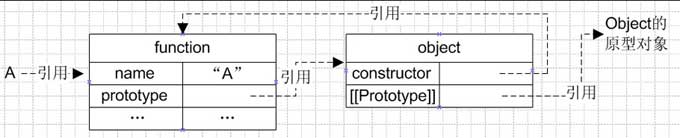
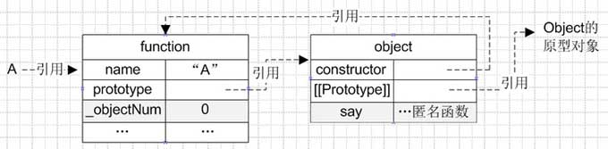
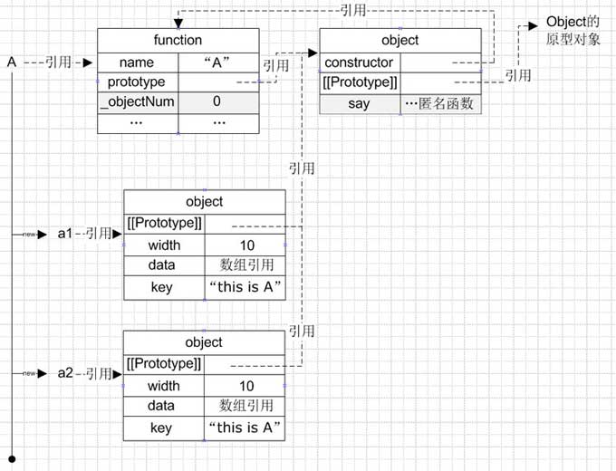
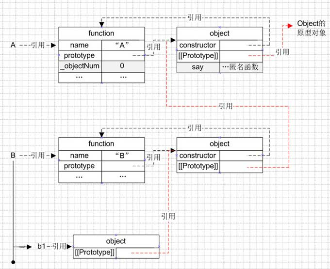

前言
JS没有原生继承，不过可以通过原型实现。
JS原型和继承相关知识
- 函数创建过程
- 构造函数
- 原型
- 原型链
- 原型继承
函数创建过程
在了解原型链之前我们先来看看一个函数在创建过程中做了哪些事情，举一个空函数的例子：
当我们在代码里面声明这么一个空函数，js解析的本质是（肤浅理解有待深入）：
- 创建一个对象（有constructor属性及[[Prototype]]属性），根据ECMA，其中[[Prototype]]属性不可见、不可枚举
- 创建一个函数（有name、prototype属性），再通过prototype属性引用刚才创建的对象
- 创建变量A，同时把函数的 引用 赋值给变量A
函数创建过程
构造函数
那么什么是构造函数呢？
按照ECMA的定义：Constructor is a function that creates and initializes the newly created object.
构造函数是用来新建同时初始化一个新对象的函数。
什么样的函数可以用来创建同时初始化新对象呢？答案是：任何一个函数，包括空函数。
所以，结论是：任何一个函数都可以是构造函数。
原型
根据前面空函数的创建图示，我们知道每个函数在创建的时候都自动添加了prototype属性，这就是函数的原型，从图中可知其实质就是对一个对象的引用（这个对象暂且取名原型对象）。
我们可以对函数的原型对象进行操作，和普通的对象无异！一起来证实一下。
围绕刚才创建的空函数，这次给空函数增加一些代码：
第7~9行代码就是给函数的原型对象增加一个say属性并引用一个匿名函数，根据“函数创建”过程，图解如下：
添加方法属性
（灰色背景就是在空函数基础上增加的属性）
简单说原型就是函数的一个属性，在函数的创建过程中由js编译器自动添加。
那么原型有什么用呢？
先了解下new运算符，如下：
var a1 = new A; var a2 = new A;这是通过构造函数来创建对象的方式。那为什么要么创建对象不是直接var a1 = {};呢？这就涉及new的具体步骤了，这里的new操作可以分成三步(以a1的创建为例)：
- 新建一个对象并赋值给变量a1：var a1 = {};
- 把这个对象的[[Prototype]]属性指向函数A的原型对象：a1.[[Prototype]] = A.prototype
- 调用函数A，同时把this指向1中创建的对象a1，对对象进行初始化：A.apply(a1,arguments)
其结构图示如下：

从图中看到，无论是对象a1还是a2，都有一个属性保存了对函数A的原型对象的引用，对于这些对象来说，一些公用的方法可以在函数的原型中找到，节省了内存空间。
原型链
了解了new运算符以及原型的作用之后，一起来看看什么是[[Prototype]]？以及对象如何沿着这个引用来进行属性的查找？
在js的世界里，每个对象默认都有一个[[Prototype]]属性，其保存着的地址就构成了对象的原型链，它是由js编译器在对象被创建 的时候自动添加的，其取值由new运算符的右侧参数决定：当我们var object1 = {};的时候，object1的[[Prototype]]就指向Object构造函数的原型对象，因为var object1 = {};实质上等于var object = new Object();（原因可参照上述对new A的分析过程）。
对象在查找某个属性的时候，会首先遍历自身的属性，如果没有则会继续查找[[Prototype]]引用的对象，如果再没有则继续查找[[Prototype]].[[Prototype]]引用的对象，依次类推，直到[[Prototype]].….[[Prototype]]为undefined（Object的[[Prototype]]就是undefined）
如上图所示：
简单说就是通过对象的[[Prototype]]保存对另一个对象的引用，通过这个引用往上进行属性的查找，这就是原型链。
有了原型链的概念，就可以进行继承。
第一种是通过改变原型链引用地址
ECMA中并没有proto这个方法，这个是ff、chrome等js解释器添加的，等同于EMCA的[[Prototype]]，这不是标准方法，那么如何运用标准方法呢？
我们知道new操作的时候，实际上只是把实例对象的原型链指向了构造函数的prototype地址块，那么我们可以这样操作
这样产生的结果是：产生一个A的实例，同时赋值给B的原型，也即B.prototype 相当于对象 {width :10 , data : [1,2,3] , key : "this is A" , [[Prototype]] : A.prototype}
这样就把A的原型通过B.prototype.[[Prototype]]这个对象属性保存起来，构成了原型的链接 但是注意，这样B产生的对象的构造函数发生了改变，因为在B中没有constructor属性，只能从原型链找到A.prototype，读出constructor:A
图示如下，其中红色部分代表原型链：

结语
看了上述图示，我看你对原型继承也有一定了解了。
文章来源JavaScript原型和继承
百度搜索JS面向对象
百度搜索JS继承
扩展阅读Javascript继承机制的设计思想